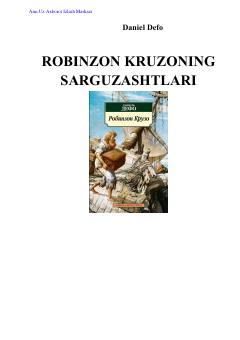

RKKimsasiz orolda qolgan dengiz sayohatchisining hayajonli va ibratli sarguzashtlari.
Yosh Robinzon ota-onasining qarshiligiga qaramay, o'z uyidan qochib dengiz sayohatiga otlanadi va kimsasiz orolga tushib qoladi. Asar uning og'ir sinovlarga bardosh berishi, tabiat bilan kurashi va hayot uchun kurashini hikoya qiladi.